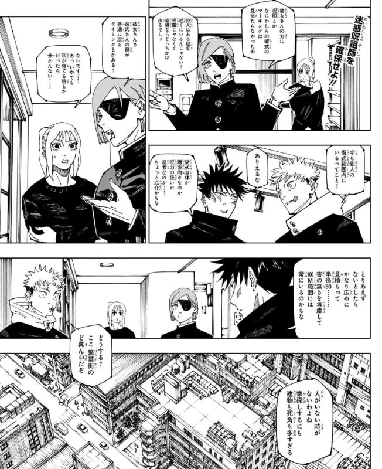
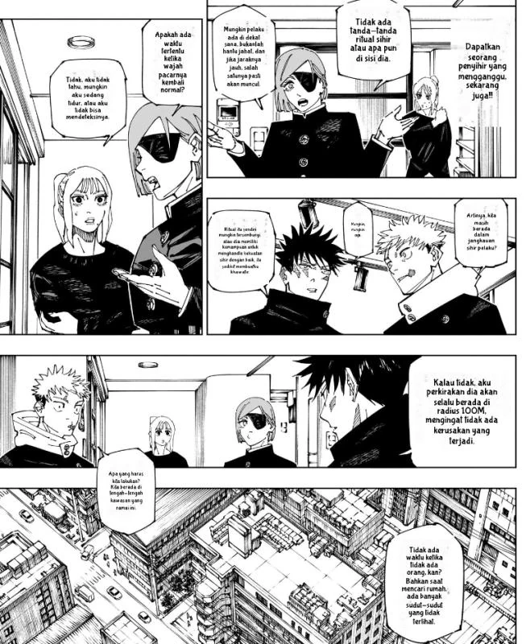

BACK TO WORKSHOP
PROJECT / 02 / AI + LOCALIZATION
AI-POWERED MANGA LOCALIZATION BROWSER EXTENSION
BEFORE.
AFTER.
LOCALIZED.
A browser extension pipeline designed for real-time manga localization, combining fine-tuned YOLO computer vision models for speech bubble boundary detection with contextual AI translation engines to translate dialogue seamlessly while preserving original page aesthetics and art layout.
LOCALIZATION PIPELINE FLOW
01. INGESTION
Intercepts manga canvas and page DOM elements in the browser
02. YOLO DETECTION
Accurately localizes speech bubble coordinates on panels
03. OCR EXTRACT
Extracts vertical and horizontal dialogue text lines
04. AI TRANSLATE
Translates narrative dialogue with contextual awareness
05. TYPESETTING
Inpaints background and renders localized text onto the page
INTERACTIVE BEFORE / AFTER COMPARISON
DRAG SLIDER TO REVEAL

BEFORE · ORIGINAL